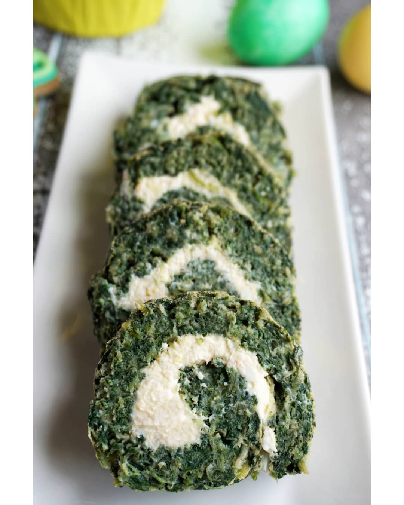

Špenátová roláda podľa @biely.tanierik — Normy Jedál
Špenátova roláda na zelený štvrtok #spenat #spenatovarolada #spinach
Cesto:
1 balík mrazený špenát
120g hladká múka
3 ks vajíčka
1 ČL olej
1 ČL maslo
1 strúčik cesnaku
Plnka:
100g šunka
3 ks natvrdo uvarené vajíčka
1 balík tavený syr
2 ks jarná cibuľka
soľ
1 strúčik cesnaku
Špenát rozmrazíme, pridáme múku, prelisovaný cesnak, 3 žĺtka, maslo, olej a soľ. Jemne vmiešame sneh z troch bielkov. Cesto vlejeme na plech vystlaný papierom na pečenie a pečieme na 170 °C cca 15 minút. Po upečení cesto zrolujeme na navlhčenej utierke a necháme odpočívať niekoľko minút. Potom odrolujeme a zrolujeme znova bez utierky a necháme vychladnúť. 3 natvrdo uvarené vajíčka najemno nakrájame, zamiešame syr, nakrájanú šunku a cibuľku. Naplníme roládu a necháme zabalené v alovbale v chladničke stuhnúť.